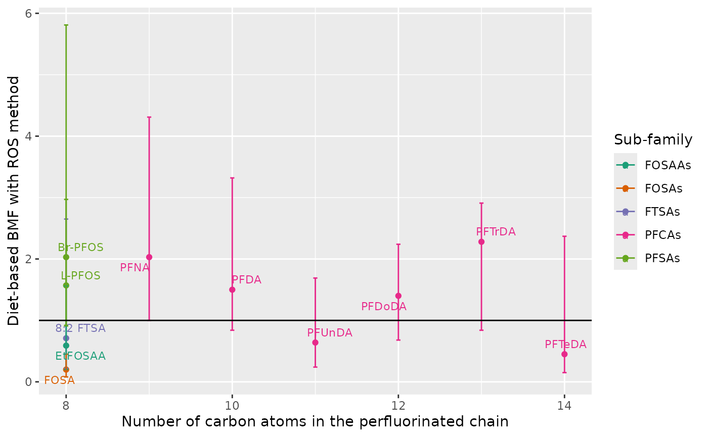
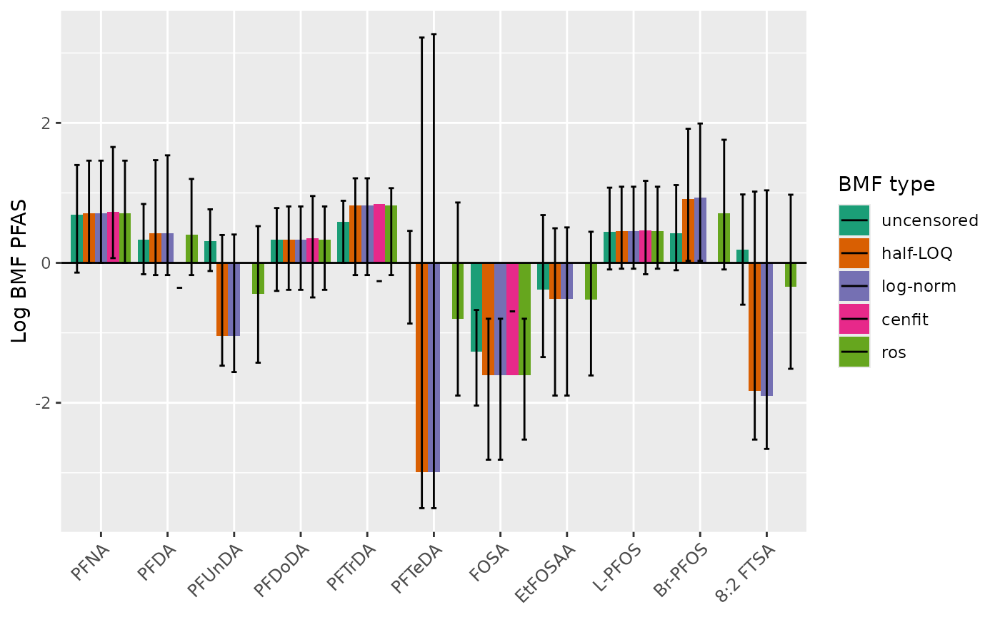

Influence of PFAS sub-family and chain length
ggdata_BMF_diet_PFAS_ng_gdw_ros <- BMF_diet_PFAS_ng_gdw_ros |>
filter(PFAS != "sumPFAS") |>
left_join(contam_prop, by = c("PFAS" = "chemical"))
ggplot_BMF_diet_PFAS_ng_gdw_ros <-
ggplot(data = ggdata_BMF_diet_PFAS_ng_gdw_ros) +
aes(x = n_C, y = BMF_diet_median, colour = sub_family_TAG) +
geom_point() +
geom_errorbar(aes(ymin = BMF_diet_min, ymax = BMF_diet_max), width = 0.05) +
geom_hline(yintercept = 1) +
geom_text_repel(aes(label = PFAS), size = 3) +
scale_color_manual(values = my_colors) +
labs(color = "Sub-family",
x = "Number of carbon atoms in the perfluorinated chain",
y = "Diet-based BMF with ROS method")
# geom_smooth(method = "lm", formula = y ~ poly(x, 2), se = TRUE, color = "black", linewidth = 0.6) +
# stat_poly_eq(
# inherit.aes = FALSE,
# data = ggdata_BMF_diet_PFAS_ng_gdw_ros,
# aes(x = logKow, y = BMF_diet_median,
# label = paste(..eq.label.., ..rr.label.., ..p.value.label.., sep = "~~~")),
# formula = y ~ poly(x, 2, raw = TRUE), parse = TRUE,
# label.x = "right",
# label.y = "top"
# )
ggplot_BMF_diet_PFAS_ng_gdw_ros
ggsave(
filename = "../inst/results/BMF_computation_PFAS_ng_gdw/0.ggplot_BMF_diet_PFAS_ng_gdw_ros.jpg",
plot = ggplot_BMF_diet_PFAS_ng_gdw_ros, width = 18, height = 10, units = "cm"
)BMF comparison between nondetects scenarios
BMF_compare <- full_join(BMF_diet_PFAS_ng_gdw_censored_compare,
BMF_diet_PFAS_ng_gdw_halfLOQ_compare) |>
full_join(BMF_diet_PFAS_ng_gdw_uncensored_compare) |>
full_join(BMF_diet_PFAS_ng_gdw_cenfit_compare) |>
full_join(BMF_diet_PFAS_ng_gdw_ros_compare) |>
mutate(type = factor(type, levels = c("uncensored", "half-LOQ", "log-norm", "cenfit", "ros"))) |>
filter(PFAS != "sumPFAS")## Joining with `by = join_by(PFAS, min, median, max, type)`
## Joining with `by = join_by(PFAS, min, median, max, type)`
## Joining with `by = join_by(PFAS, min, median, max, type)`
## Joining with `by = join_by(PFAS, min, median, max, type)`
DT::datatable(BMF_compare)
write_xlsx(x = BMF_compare,
path = "../inst/results/BMF_computation_PFAS_ng_gdw/0.BMF_diet_PFAS_ng_gdw_compare.xlsx")
ggplot_BMFs_compare <- ggplot(BMF_compare) +
aes(x = PFAS, y = log(median), fill = type) +
geom_col(position = "dodge") +
geom_errorbar(aes(ymin = log(min), ymax = log(max), colour = type),
position = position_dodge(width = 0.9),
width = 0.4) +
geom_hline(yintercept = 0) +
scale_color_manual(values = c("black", "black", "black", "black", "black")) +
scale_fill_manual(values = my_colors[1:5]) +
labs(x = NULL, y = "Log BMF PFAS", fill = "BMF type", color = "BMF type") +
theme(axis.text.x=element_text(size=9, angle=45, hjust=1))
ggplot_BMFs_compare## Warning: Removed 6 rows containing missing values or values outside the scale range
## (`geom_col()`).
ggsave(plot = ggplot_BMFs_compare,
filename = "../inst/results/BMF_computation_PFAS_ng_gdw/0.ggplot_BMFs_compare.jpg",
width = 22, height = 15, units = "cm")## Warning: Removed 6 rows containing missing values or values outside the scale range
## (`geom_col()`).